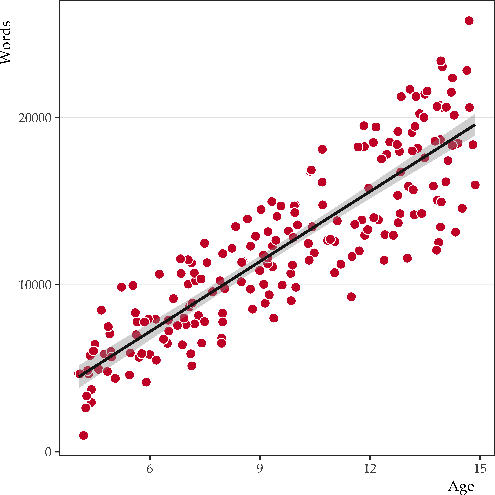
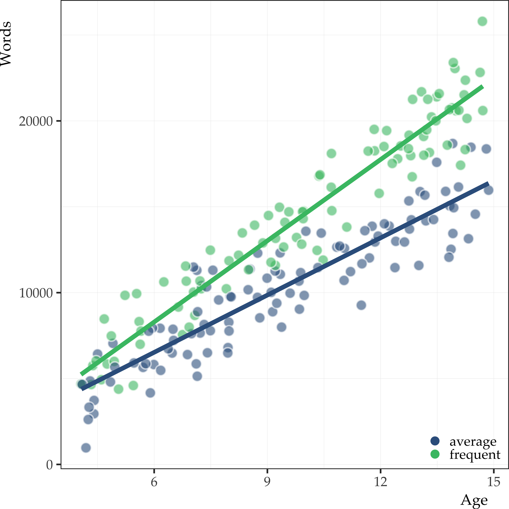

@chelseaparlettpelleriti They're LITERALLY the same #statsTikTok #fyp #math #statistics #regression
♬ TWINS - Kaygon
Data Science for Linguists
The general linear model
Joseph V. Casillas, PhD
Rutgers University
Last update: 2025-04-01
A quick review
A quick review
Classical MRC
- In classical Multiple Regression/Correlation (MRC) predictors are continuous variables
- Recall
- Darwinian theory predicted continuous variation in traits
- Galton and Pearson created a model for continuous variables
- Discontinuous (categorical) variables were not considered
- In real life we do run into dichotomous/discontinuous variables
- Or… if an entire experimental group gets one treatment and another group gets a different treatment, this is also discontinuous
A quick review
Classical ANOVA
Classical Analysis of Variance (ANOVA) assumes that all predictors are discontinuous variables
ANOVA methods are often abused by forcing continuous variables into discontinuous form (this can reduce your statistical power by as much as 50%)
A quick review
Both types of variables (continuous and categorical) exist in the world
Categorical
- Smoker/Non-smoker
- Native speaker/L2 learner
- Voiced/voiceless segment
- Stressed/Unstressed syllable
- Etc.
Continuous
- Age
- Weight
- Amount of exercise
- Miles per gallon
- VOT
A quick review
The modern GLM
Modern GLM includes both MRC and ANOVA:
- MRC predictors are all continuous
- ANOVA predictors are all discontinuous/categorical
- But both MRC and ANOVA are both part of the same big thing: the GLM
A quick review
The modern GLM
- Before ANOVA and MRC were unified, we could not account for both levels of measurement within the same model
- The modern GLM can accommodate any combination of categorical and continuous variables
- This was not known until 1968 (Cohen, 1968)
- So now we can construct mixed models with both categorical and continuous variables
A brief history
Remember…
Aristotle
- Categories are inherent in the individual
- Individuals need to have some identifiable, visible feature to be classified
- The possession of certain observable features puts individuals in categories
Plato
- Categories are God-given
- Things possess an essence of a type
- Observable features are not reliable because they are based on sense perceptions
A brief history
(i.e., eidolon)
A brief history
How unification occurred
- Platonic and Aristotelian philosophy came back into European culture (the Essentialists and the Nominalists in Scholastic Philosophy)
- Nominalists assert that groups are mental constructs (not like Plato’s god-given groups)
- This kind of Aristotelian reasoning was revived in statistics by Jacob Cohen in 1968
- The solution to unifying MRC and ANOVA: Dummy Variable Coding
A brief history
A brief history
A brief history
A brief history
Two Disciplines of Scientific Psychology (Cronbach, 1957)
Differential Psychology
(Galton and Pearson)
- Influenced by Darwinian thinking
- Based on individual differences
- Led to the development of MRC
Experimental Psychology
(Fechner, Weber, and Wundt)
- Relied more on typological approach
- Categorically distinct groupings to design/carry out experiments
- This led to the development of ANOVA (Fisher)
A brief history
The two disciplines
MRC and ANOVA are both part of the same GLM model but, over time, they began to diverge from each other:
- We need them both, but historically this separation occurred
Fisher (experimentalists) vs. Pearson (observationalists):
- A personal/family feud existed between them
- Pearson was principle figure in stats, criticized Fisher’s use of chi-square test in an old paper
- Thought Fisher had done a disservice to statistics (see Lenhard, 2006)
- Both angry, held grudges
A brief history
Sir Ronald Aylmer Fisher
- Did agricultural experiments with plants at Rothamsted Experimental Station at Harpenden, Hertfordshire, England (Studies in Crop Variation, 1919)
- Actually did controlled experiments
- Unlike the other differential psychologists who just did observational studies
- Did not have a Platonist ideology and understood individual differences
“There is, then, in this analysis of variance no indication of any other than innate and heritable factors at work.”
(coining the phrase ‘analysis of variance’)
– R.A. Fisher (1919)
“Critical tests of this kind may be called tests of significance, and when such tests are available we may discover whether a second sample is or is not significantly different from the first.”
(coining the phrase ‘test of significance’)
– R.A. Fisher (1925), p.43
A brief history
Sir Ronald Aylmer Fisher
Invented ANOVA to support
- Randomly selected groups will differ by some amount due to individual differences among members of the group
- However, experimental groups should be different beyond these random individual differences
- He didn’t want to just assume the groups were different
- He wanted to show the variance between groups was greater than the variance within groups
A brief history
Fisher’s method
- Fisher’s used random assignment, not random sampling
- Random Sampling: any individual in the population has an equal chance of being in the sample
- Random Assignment:
- You randomly assign each subject to a treatment group or control group
- You create 2 or more groups that will be subjected to 2 or more different treatments
- This is important to show that differences between treatment groups is greater than chance
- Your sample might not be random, but your assignment to experimental groups should be random
- This procedure has nothing to do with representing the original population:
- Just with how you randomly assign individuals into treatment groups from the basic sample you are working with
- Each subject must have an equal chance to get into either of the treatment groups
A brief history
Fisher’s method
- Using the central limit theorem, we know how the distribution of randomly selected group means will differ from the mean of the entire population
- If the treatment worked, the results should be greater than what would be expected by chance (meaning sampling of individuals)
- If treatment did not work, the results would not be greater than what is expected by chance (meaning sampling of individuals)
- This is what the F-ratio (for Fisher) is all about
- The numerator in the F-ratio represents the variance due to treatment effects
- The denominator is an independent estimate of the random sampling “error”
- All ANOVA assumes random assignment not necessarily random sampling
A brief history
Fisher’s method
- This was designed for purely experimental purposes, not for naturally occurring phenomena, i.e., observational studies
- Should not use classical ANOVA for observational studies, only for pure controlled experiments
- For example, one should not use ANOVA to study naturally occurring races, sexes, etc., because of lack of random assignment to these groups
- For example, if you compare males with females, this is not a randomly assigned condition
- Researchers do this anyway
A brief history
Analysis of Variance (ANOVA)
How did Sir Ronald Fisher build the ANOVA model?
He built it from the MRC model…
A brief history
Summed Linear Deviations (MRC)
Sum of Linear Deviations:
\[(y_{i} - \bar{y}) = (\hat{y}_{i} - \bar{y}) + (y_{i} - \hat{y}_{i})\]
Total Deviation = Predicted Deviation + Error Deviation
A brief history
Multiple Regression/Correlation
In MRC, the predicted y ( \(\hat{y}_{i}\) ) is the score predicted based on the regression line:
MRC is based on having individual scores as the criterion variable (y)
Individual continuous variables are also the predictors for y
A brief history
Summed Linear Deviations (ANOVA)
Sum of Linear Deviations:
\[(y_{i} - \bar{y}_{G}) = (\bar{y}_{j} - \bar{y}_{G}) + (y_{i} - \bar{y}_{j})\]
Total Deviation = Predicted Deviation + Error Deviation
A brief history
Analysis of Variance
In ANOVA, you are dealing with groups:
- Still trying to predict an individual’s score
- But you aren’t basing your prediction on other individual scores
- You are basing it on their group status
A brief history
Analysis of Variance
What is the best prediction you can make about any individual in a group if you don’t know anything else about that individual?
- Use the mean of the group to predict individual scores
- Our predicted score ( \(\hat{y}_{i}\) ) now becomes our group mean ( \(\bar{y}_{j}\) )
- So the group mean ( \(\bar{y}_{j}\) ) now becomes the predicted \(\hat{y}_{i}\)
This is because my prediction for you (if I don’t know anything else about you) is based on your group’s mean
- The grand mean is \(\bar{y}_{G}\) and the group mean is \(\bar{y}_{j}\)
A brief history
Sums of Squared Deviations (MRC)
SS = Sum of squares:
\[\sum (y_{i} - \bar{y})^2 = \sum (\hat{y}_{i} - \bar{y})^2 + \sum (y_{i} - \hat{y}_{i})^2\]
\[SS_{Total} = SS_{Predicted} + SS_{Error}\]
| \(SS_{Total}\) | = | \(\sum (y_{i} - \bar{y})^2\) |
| \(SS_{Predicted}\) | = | \(\sum (\hat{y}_{i} - \bar{y})^2\) |
| \(SS_{Error}\) | = | \(\sum (y_{i} - \hat{y}_{i})^2\) |
A brief history
Sums of Squared Deviations (ANOVA)
SS = Sum of squares:
\[\sum (y_{i} - \bar{y}_{G})^2 = \sum (\bar{y}_{j} - \bar{y}_{G})^2 + \sum (y_{i} - \bar{y}_{j})^2\]
\[SS_{Total} = SS_{Predicted} + SS_{Error}\]
| \(SS_{Total}\) | = | \(\sum (y_{i} - \bar{y}_{G})^2\) |
| \(SS_{Predicted}\) | = | \(\sum (\bar{y}_{j} - \bar{y}_{G})^2\) |
| \(SS_{Error}\) | = | \(\sum (y_{i} - \bar{y}_{j})^2\) |
A brief history
Squared Multiple Correlation Coefficient (MRC)
\[R^2 = \frac{\sum (\hat{y}_{i} - \bar{y})^2} {\sum (y_{i} - \bar{y})^2}\]
\[R^2 = \frac{SS_{Predicted}} {SS_{Total}}\]
Coefficient of determination
Proportion of Variance Explained
A brief history
Squared Multiple Correlation Coefficient (ANOVA)
\[R^2 = \frac{\sum (\hat{y}_{j} - \bar{y}_{G})^2} {\sum (y_{i} - \bar{y}_{G})^2}\]
\[R^2 = \frac{SS_{Predicted}} {SS_{Total}}\]
Coefficient of determination
Proportion of Variance Explained
A brief history
Mean Squared Deviations (MRC)
MS = Mean Squares (Variances):
| \(MS_{Total}\) | = | \(\sum (y_{i} - \bar{y})^2 / (n - 1)\) |
| \(MS_{Predicted}\) | = | \(\sum (\hat{y}_{i} - \bar{y})^2 / (k)\) |
| \(MS_{Error}\) | = | \(\sum (y_{i} - \hat{y}_{i})^2 / (n - k - 1)\) |
\[F_{(k), (n-k-1)} = \frac{\sum (\hat{y}_{i} - \bar{y})^2 / (k)} {\sum (y_{i} - \hat{y}_{i})^2 / (n - k - 1)}\]
A brief history
Mean Squared Deviations (ANOVA)
MS = Mean Squares (Variances):
| \(MS_{Total}\) | = | \(\sum (y_{i} - \bar{y}_{G})^2 / (n - 1)\) |
| \(MS_{Predicted}\) | = | \(\sum (\bar{y}_{j} - \bar{y}_{G})^2 / (g - 1)\) |
| \(MS_{Error}\) | = | \(\sum (y_{i} - \bar{y}_{j})^2 / (n - g)\) |
\[F_{(g-1), (n-g)} = \frac{\sum (\bar{y}_{j} - \bar{y}_{G})^2 / (g - 1)} {\sum (y_{i} - \hat{y}_{j})^2 / (n - g)}\]
A brief history
Mean Squared Deviations (MRC/ANOVA)
MS = Mean Squares (Variances):
| \(MS_{Total}\) | = | \(SS_{Total} / df_{Total}\) |
| \(MS_{Predicted}\) | = | \(SS_{Predicted} / df_{Predicted}\) |
| \(MS_{Error}\) | = | \(SS_{Error} / df_{Error}\) |
\[F-ratio = \frac{MS_{Predicted}} {MS_{Error}}\]
A brief history
Degrees of Freedom
MRC
| \(df_{Total}\) | = | n - 1 |
| \(df_{Predicted}\) | = | k |
| \(df_{Error}\) | = | n - k - 1 |
\[df_{Total} = df_{Predicted} + df_{Error}\]
ANOVA
| \(df_{Total}\) | = | n - 1 |
| \(df_{Predicted}\) | = | g - 1 |
| \(df_{Error}\) | = | n - g |
\[df_{Total} = df_{Predicted} + df_{Error}\]
A brief history
Equivalences
| MRC | ANOVA | |
|---|---|---|
| . | ||
| \(SS_{Predicted}\) | = | \(SS_{BG}\) |
| \(SS_{Error}\) | = | \(SS_{WG}\) |
| . | ||
| \(MS_{Predicted}\) | = | \(MS_{BG}\) |
| \(MS_{Error}\) | = | \(MS_{WG}\) |
| . | ||
| k | = | g - 1 |
| n - k - 1 | = | n - g |
A brief history
Equivalences (MRC/ANOVA)
- ANOVA is just MRC where the predictors are categorical variables
- Predictions are based entirely on the group status of individuals
- The criterion variables are still continuous
- In a controlled experiment, these are orthogonal variables:
- Conclusions may not be theoretically valid if you are using naturally occurring groups
- But the math will still work
- The strength of ANOVA is based on proper experimental design
A brief history
The Logic of the F-Ratio
- If we use random assignment, the means of the groups should only differ by random chance (individual differences) and nothing else
- However, if we introduce an effective treatment, then the means will differ by random chance plus the effects of the treatment
- But if the treatment didn’t work, then the means will only differ by random chance
- This is the denominator of the F-ratio!
So how did unification occur?
The General Linear Model
The General Linear Model
Jacob Cohen (1923-1998)
- Statistician and Psychologist
- Best known for his work on statistical power and effect size
- Helped lay foundations for meta-analysis
- Gave his name to Cohen’s kappa and Cohen’s d
- Made a breakthrough in how to create the modern GLM:
- Introduced Dummy Variable method of coding groups
- Makes MRC do ANOVA!
- Cohen (1968) Multiple regression as a general data analytic system
- Cohen (1969) Statistical Power Analysis for the Behavioral Sciences
- Cohen & Cohen (1975) Applied Multiple Regression/Correlation Analysis for the Behavioral Sciences
- Cohen (1990) Things I have learned (so far)
- Cohen (1994) The earth is round (p<.05)
The General Linear Model
Dummy variables
- This was based upon the idea that category membership can be considered an individual characteristic
- Your category membership is part of who you are
- You may have other individual differences in addition to your category membership
- But membership is also an individual trait!
- This was Aristotelian/Nominalist, not Platonic/Essentialist typological thinking!
- Aristotle said that categories inhere in the individual and that the individual is the ultimate reality
The General Linear Model
Dummy variables
- In a sense Cohen took an Aristotelian approach in order to include both MRC and ANOVA within one general linear model
- You score each person by a dummy variable to say whether they have a feature that defines their group membership or not
- Dummy variable coding is just binary coding of whether you have or do not have trait
- Dummy variable coding will make a regular regression equation do an ANOVA
- Multiple Regression As A General Data Analytic Method was the name of Cohen’s seminal article (Cohen, 1968)
The “GLM” Compromise
- The way he told the story (in 1968), MRC had seemingly “eaten” ANOVA:
- MRC included ANOVA
- ANOVA was just a “special case” of MRC
- Mathematically correct, but upset the ANOVA guys
- They decided to call the whole superordinate category “GLM” to make everyone happy:
- GLM w/ continuous predictors = MRC
- GLM w/ categorical predictors = ANOVA
- If you have all of either one, you can call it classical ANOVA or classical MRC, if not, it’s a “Mixed GLM”
- How did Jacob Cohen accomplish this feat?
- He didn’t actually cite Aristotle
- He just did the math…
Dummy variables
Dummy variables
The Multiple Regression Equation
\[\hat{y}_{i} = a + b_{1}x_{1} + b_{2}x_{2} + b_{3}x_{3} ...\]
What if the predictors are dummy variables?
| \(x_{1}\) | = | \(d_{1}\) | = | 0 or 1 |
| \(x_{2}\) | = | \(d_{2}\) | = | 0 or 1 |
| \(x_{3}\) | = | \(d_{3}\) | = | 0 or 1 |
Dummy variables
The Dummy Variable Equation
A single dummy variable:
\[\hat{y}_{i} = a + b_{1}d_{1}\]
Evaluating the function:
| \(\hat{y}_{(d1=1)} =\) | \(a + b_{1}\) |
| \(\hat{y}_{(d1=0)} =\) | \(a\) |
Dummy variables
Evaluating the function
| \(\bar{y}_{(d1=1)} = \hat{y}_{(d1=1)} = a + b_{1}\) |
| \(\bar{y}_{(d1=0)} = \hat{y}_{(d1=0)} = a\) |
Which implies that…
\[b_{1} = (\bar{y}_{(d1=1)} - \bar{y}_{(d1=0)})\]
Dummy variables
You get j-1 dummies
| Groups | d1 | d2 | d3 |
|---|---|---|---|
| A | 0 | 0 | 0 |
| B | 1 | 0 | 0 |
| C | 0 | 1 | 0 |
| D | 0 | 0 | 1 |
Dummy variables
One level is taken as the reference or baseline. This is the intercept.
| Groups | d1 | d2 | d3 | |
|---|---|---|---|---|
| A | 0 | 0 | 0 | ⬅︎ Intercept |
| B | 1 | 0 | 0 | |
| C | 0 | 1 | 0 | |
| D | 0 | 0 | 1 |
Dummy variables
j-1 dummies = j-1 comparisons
| Groups | d1 | d2 | d3 | |
|---|---|---|---|---|
| A | 0 | 0 | 0 | ⬅︎ Intercept |
| B | 1 | 0 | 0 | |
| C | 0 | 1 | 0 | |
| D | 0 | 0 | 1 | |
| ⬆︎ AB |
Dummy variables
j-1 dummies = j-1 comparisons
| Groups | d1 | d2 | d3 | |
|---|---|---|---|---|
| A | 0 | 0 | 0 | ⬅︎ Intercept |
| B | 1 | 0 | 0 | |
| C | 0 | 1 | 0 | |
| D | 0 | 0 | 1 | |
| ⬆︎ AC |
Dummy variables
j-1 dummies = j-1 comparisons
| Groups | d1 | d2 | d3 | |
|---|---|---|---|---|
| A | 0 | 0 | 0 | ⬅︎ Intercept |
| B | 1 | 0 | 0 | |
| C | 0 | 1 | 0 | |
| D | 0 | 0 | 1 | |
| ⬆︎ AD |
Let’s see some examples…
Examples
lm(mpg ~ cyl, data = mtcars)| term | estimate | std.error | statistic | p.value |
|---|---|---|---|---|
| Intercept | 26.664 | 0.972 | 27.437 | 0 |
| 6-cyl | -6.921 | 1.558 | -4.441 | 0 |
| 8-cyl | -11.564 | 1.299 | -8.905 | 0 |
lm(mpg ~ cyl, data = mtcars)| term | estimate | std.error | statistic | p.value |
|---|---|---|---|---|
| Intercept | 26.664 | 0.972 | 27.437 | 0 |
| 6-cyl | -6.921 | 1.558 | -4.441 | 0 |
| 8-cyl | -11.564 | 1.299 | -8.905 | 0 |
lm(mpg ~ cyl, data = mtcars)| term | estimate | std.error | statistic | p.value |
|---|---|---|---|---|
| Intercept | 26.664 | 0.972 | 27.437 | 0 |
| 6-cyl | -6.921 | 1.558 | -4.441 | 0 |
| 8-cyl | -11.564 | 1.299 | -8.905 | 0 |
Regression output
mtcars |>
lm(mpg ~ cyl, data = _) |>
summary()| Term | Estimate | Std. Error | t | p.value |
|---|---|---|---|---|
| Intercept | 26.66 | 0.97 | 27.44 | 0e+00 |
| 6 | -6.92 | 1.56 | -4.44 | 1e-04 |
| 8 | -11.56 | 1.30 | -8.90 | 0e+00 |
Means
mtcars |>
group_by(cyl) |>
summarize(avg = mean(mpg), sd = sd(mpg))| cyl | avg | sd |
|---|---|---|
| 4 | 26.66 | 4.51 |
| 6 | 19.74 | 1.45 |
| 8 | 15.1 | 2.56 |
- Each simple effect is an independent samples t-test
- The baseline is compared to the other two levels of the factor
- Notice that
6-cylis not compared to8-cyl - We would have to change the baseline to make that comparison
| Term | Estimate | Std. Error | Statistic | p.value |
|---|---|---|---|---|
| Intercept | 19.74 | 1.22 | 16.21 | 0.0000 |
| cyl4 | 6.92 | 1.56 | 4.44 | 0.0001 |
| cyl8 | -4.64 | 1.49 | -3.11 | 0.0042 |
- Now we have the 6-to-8 cyl comparison
- Notice how the slopes have changed
Dummy variables
Categorical and continuous predictors
- One of the benefits of doing ANOVA with MRC is that you can include different types of predictors in your model, i.e., categorical and continuous.
- Neither classical ANOVA nor classical MRC can handle combinations of these two predictors
- This is possible because of dummy coding
Bivariate model
\[vocab \sim age\]
Call:
lm(formula = vocab ~ ages, data = vocab_sample)
Residuals:
Min 1Q Median 3Q Max
-6047.8 -1665.3 19.7 1865.3 6449.0
Coefficients:
Estimate Std. Error t value Pr(>|t|)
(Intercept) -1196.61 546.82 -2.188 0.0298 *
ages 1397.87 53.84 25.962 <2e-16 ***
---
Signif. codes: 0 '***' 0.001 '**' 0.01 '*' 0.05 '.' 0.1 ' ' 1
Residual standard error: 2444 on 198 degrees of freedom
Multiple R-squared: 0.7729, Adjusted R-squared: 0.7718
F-statistic: 674.1 on 1 and 198 DF, p-value: < 2.2e-16
Additive model
\[vocab \sim age + reader\]
Call:
lm(formula = vocab ~ ages + reader_type, data = vocab_sample)
Residuals:
Min 1Q Median 3Q Max
-4166.1 -1236.6 62.4 1190.2 4909.5
Coefficients:
Estimate Std. Error t value Pr(>|t|)
(Intercept) -2254.98 394.00 -5.723 3.84e-08 ***
ages 1338.25 38.32 34.925 < 2e-16 ***
reader_typefrequent 3474.07 246.42 14.098 < 2e-16 ***
---
Signif. codes: 0 '***' 0.001 '**' 0.01 '*' 0.05 '.' 0.1 ' ' 1
Residual standard error: 1729 on 197 degrees of freedom
Multiple R-squared: 0.887, Adjusted R-squared: 0.8858
F-statistic: 773 on 2 and 197 DF, p-value: < 2.2e-16
Dummy variables
Categorical and continuous predictors - mixed GLMs
- A mixed GLM can account for continuous and categorical predictors
- However, if the slope of two groups are different, then you must interact the categorical variable with the continuous one
- The interaction term constitutes a test for “homogeneity of slopes”
- These interaction terms accommodate the possible difference in slopes and therefore avoids a serious model misspecification
- Leaving them out would be omitting a relevant variable!
Dummy variables
Categorical and continuous predictors - mixed GLMs
- What does it mean to have an interaction between a dummy variable and a continuous predictor?
- Remember that with a continuous variable we get an intercept and a slope, so if one is interacting with a categorical variable, it means that either the intercepts or the slopes of both might be different for each category
- “Homogeneity of slopes” assumes that your different groups have the same slope for the continuous variable
Dummy variables
Categorical and continuous predictors - mixed GLMs
- The problem is that using either classical ANOVA or classical MRC (or even “ANCOVA”, which is a combination of both) does not permit you to handle interactions between these types of variables
- But using Dummy or Contrast Coding Does!
- By virtue of the numerical nature of these “coded vectors”, which can be accommodated by MRC
Multiplicative model
\[vocab \sim age + reader + age:reader\]
Call:
lm(formula = vocab ~ ages * reader_type, data = vocab_sample)
Residuals:
Min 1Q Median 3Q Max
-3673.5 -1036.0 22.7 1027.0 3804.4
Coefficients:
Estimate Std. Error t value Pr(>|t|)
(Intercept) -138.67 475.28 -0.292 0.771
ages 1110.73 48.42 22.939 < 2e-16 ***
reader_typefrequent -1027.18 705.63 -1.456 0.147
ages:reader_typefrequent 465.73 69.28 6.723 1.9e-10 ***
---
Signif. codes: 0 '***' 0.001 '**' 0.01 '*' 0.05 '.' 0.1 ' ' 1
Residual standard error: 1562 on 196 degrees of freedom
Multiple R-squared: 0.9082, Adjusted R-squared: 0.9067
F-statistic: 646 on 3 and 196 DF, p-value: < 2.2e-16
| Characteristic |
vocab ~ age
|
vocab ~ age + reader_type
|
vocab ~ ages * reader_type
|
||||||
|---|---|---|---|---|---|---|---|---|---|
| Beta | 95% CI | p-value | Beta | 95% CI | p-value | Beta | 95% CI | p-value | |
| (Intercept) | -1,197 | -2,275, -118 | 0.030 | -2,255 | -3,032, -1,478 | <0.001 | -139 | -1,076, 799 | 0.8 |
| ages | 1,398 | 1,292, 1,504 | <0.001 | 1,338 | 1,263, 1,414 | <0.001 | 1,111 | 1,015, 1,206 | <0.001 |
| reader_type | |||||||||
| average | — | — | — | — | |||||
| frequent | 3,474 | 2,988, 3,960 | <0.001 | -1,027 | -2,419, 364 | 0.15 | |||
| ages * reader_type | |||||||||
| ages * frequent | 466 | 329, 602 | <0.001 | ||||||
| Abbreviation: CI = Confidence Interval | |||||||||
Analysis of Variance Table
Model 1: vocab ~ 1
Model 2: vocab ~ ages
Model 3: vocab ~ ages + reader_type
Model 4: vocab ~ ages * reader_type
Res.Df RSS Df Sum of Sq F Pr(>F)
1 199 5208897978
2 198 1182686093 1 4026211885 1649.497 < 2.2e-16 ***
3 197 588724259 1 593961835 243.340 < 2.2e-16 ***
4 196 478410910 1 110313349 45.194 1.901e-10 ***
---
Signif. codes: 0 '***' 0.001 '**' 0.01 '*' 0.05 '.' 0.1 ' ' 1The vocabulary data were analyzed using a general linear model. Estimated vocabulary size was the criterion with age and reader type (frequent/average) as predictors. The reader type factor was dummy coded with average readers set as the reference group. Main effects and the age by reader type interaction were assessed using nested model comparisons. Experiment-wise alpha was set at 0.05.
There was a main effect of age (F(1) = 1649.49, p < 0.001), reader type (F(1) = 243.34; p < 0.001), as well as an age by reader type interaction (F(1) = 45.19; p < 0.001). The model containing the interaction provided the best fit of the data (R2 = 0.91). Overall, vocabulary size increased as a function of age. However, the size of the effect was modulated by reader type. Specifically, average readers showed an increase of approximately 1,111 words +/- 48.42 se (t = 22.94, p < 0.001) per year. Frequent readers showed an additional increase of 466 words +/- 69.28 se per year (1,577 words total, t = 6.72, p < 0.001).
Practice
References
Cohen, J. (1968). Multiple regression as a general data-analytic system. Psychological Bulletin, 70(6), 426–443. https://doi.org/10.1037/h0026714
Cohen, J. (1969). Statistical power analysis for the behavioral sciences. routledge.
Cohen, J. (1990). Things I have learned (so far). American Psychologist, 45(12), 1304–1312. https://doi.org/10.1037/0003-066X.45.12.1304
Cohen, J. (1994). The earth is round (p<.05). American Psychologist, 49(12), 997–1003. https://doi.org/10.1037/0003-066X.49.12.997
Cohen, J., & Cohen, P. (1975). Applied multiple regression/correlation analysis for the behavioral sciences. Lawrence Erlbaum.
Cronbach, L. J. (1957). The two disciplines of scientific psychology. American Psychologist, 12(11), 671–684. https://doi.org/10.1037/h0043943
Figueredo, A. J. (2013a). Continuous and categorical predictors. Statistical Methods in Psychological Research.
Figueredo, A. J. (2013b). The General Linear Model: ANOVA. Statistical Methods in Psychological Research.
Fisher, R. A. (1919). The causes of human variability. The Eugenics Review, 10(4), 213–220. https://doi.org/10.1093/ije/dyw315
Fisher, R. A. (1925). Statistical methods for research workers. Edinburgh: Oliver; Boyd.
Hardy, M. A. (1993a). Assessing group differences in effects. In M. A. Hardy (Ed.), Regression with dummy variables (pp. 29–63). Newbury Park, CA: Sage.
Hardy, M. A. (1993b). Creating dummy variables. In M. A. Hardy (Ed.), Regression with dummy variables (pp. 7–17). Newbury Park, CA: Sage.
Hardy, M. A. (1993c). Using dummy variables as regressors. In M. A. Hardy (Ed.), Regression with dummy variables (pp. 18–28). Newbury Park, CA: Sage.
Lenhard, J. (2006). Models and statistical inference: The controversy between Fisher and Neyman-Pearson. The British Journal for the Philosophy of Science. https://doi.org/10.1093/bjps/axi152
Wickham, H., & Grolemund, G. (2016). R for data science: Import, tidy, transform, visualize, and model data. O’Reilly Media.